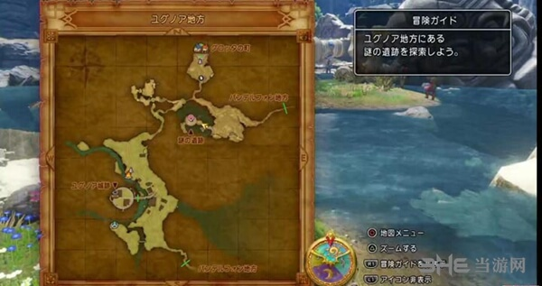
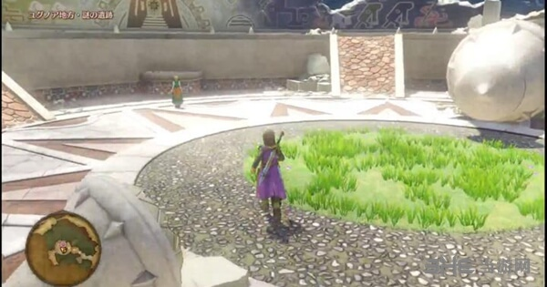

遊戲滾動字幕，重新讀取通關存檔後，遊戲劇情繼續推進。
劇情後，眾人離開聖地拉姆達，前往古洛塔鎮南面的謎之遺蹟

到達遺蹟後，劇情，接著靠近雪妮婭 觸發劇情

劇情後，在指示方向的裂縫牆背後，亮點處找到了「神秘の歯車」，劇情後乘坐鯨魚，前往大樹北面的忘れられた塔。
在塔的入口處，調查後使用「神秘歯輪」開門進入。
一路無障礙，到達塔最上階，時之祭壇，與大白對話發生劇情，隨後與卡繆對話2次，劇情中主角穿越時光，返回過去，目的拯救蘿莉小紅帽，改變歷史。但是在這之前，先整理下主角身上的裝備，將全部同班的最強武器防具都放在主角身上。
穿越時空的主角回到了過去時代，發現自己身處澤蘭達山、聖地拉姆達。
前往大聖堂發生劇情後，與同伴們匯合，當然小紅帽蘿莉此時還依然神氣活現。
這裡雖然主角的等級延續沒變，但是其他同伴的等級回到了之前我們到達聖地時候的等級，等級雖然低了，但是裝備可以用，把之前從未來帶過來的高級裝備給同伴依次裝備。
隨後依據已經經歷過的歷史一樣，穿過澤蘭達山，前往東南方位的始祖之森。
經過始祖之森，在天空祭壇觸發劇情後，到達生命大樹。
話不多說，來到生命大樹前，按照之前的經歷過的劇情，主角在取得勇者之劍的時候會受到偷襲，從未來歸來的主人公這次並沒有給偷襲者機會，偷襲未成，歷史改變，劇情切入BOSS戰。
有魔劍在手的主角，完全可以輕輕鬆鬆幹掉眼前這個25仔BOSS荷梅洛斯 (過去)。
而發現偷襲失敗的被魔王附身的國王，為了防止計畫敗露，直接殺人滅口幹掉了荷梅洛斯，繼續扮演好好國王的角色，打算伺機謀取勇者之劍。
劇情後，主人公取得「勇者之劍・真」。
使用傳送前往狄爾卡達城鎮，進入北面狄爾卡達城，到達2層玉座の間發生劇情。
劇情後，前往2階貴賓室休息，正當主角休息時，假國王出現了，打算乘著主角休息時，偷取勇者之劍，幸好被小黑怪物妨礙。
同時，假國王也被眾人揭穿，眾人追趕國王至玉座の間，一場BOSS戰在所難免。
BOSS：魔道士巫爾諾加
本戰需要一定的打法，BOSS釋放紫色濃霧，會出現提示「回覆效果翻轉」，此時如果治癒同伴則會直接減少對方HP，如果是補充MP則反倒是減少MP。
維持幾個回合，濃霧會變淡，此時可正常使用咒術、道具回覆。
建議打法，群體攻擊輸出為主，再攻擊魔王的同時，以優先打掉魔王周圍的法杖為先。
具體打法可參看視頻：
戰勝BOSS後，未成形魔王被擊敗，第二天在玉座の間發生劇情。
隨後第8位同伴將軍再次加入。
由於主角一行人幹掉了魔王，歷史改變，勇者星在小黑怪物的召喚下墜地，更強大的敵人出現了……
眾人穿過狄爾卡達地方前往狄爾卡柯斯塔。
狄爾卡達神殿發生劇情，乘坐鯨魚前往神民之裡。
這個時代由於阻止了魔王炸掉生命大樹，所以眾神健在。
進入深處的神苑發生劇情，隨後調查長老身前的寶箱取得「最後的鑰匙」
太陽の神殿內取得「神聖火種」
隨後需要調查3根苗木，劇情後獲得引導之木
苗木1位於度魯達鄉，直接傳送過去
苗木2，乘坐鯨魚前往邦德爾馮東北高台，調查高台的苗木
苗木3，乘坐鯨魚前往達哈拉濕原西北高台，調查苗木。
| 狄爾卡達地牢˙下層 | 配方書"盜賊王指南" 骷髏頭盔 |
| 荒野地下迷宮˙地下1樓˙監牢(火焰之里附近) | 配方書"軍人制服論" 技能種子(潘朵拉寶箱怪掉落) 金屬史萊姆王背心 |
| 薩瑪迪城鎮˙水井 | 岩漿石 |
| 達哈路奈鎮 | 小徽章 美肌草 進化的祕石 50000G |
| 索爾提科鎮 | 彩虹色的布片 |
| 普恰勞村 | 金塊 |
| 克雷莫蘭城˙地下1樓 | 時之水晶 配方書"皇家工藝集" |
| 梅達恰特地方˙西側島嶼(白色海灣北方小島) | 金屬史萊姆王鎧甲 |
| 地圖西南的無名島嶼 | 配方書"戰女神的教典" |
| 邦德爾馮地方˙東側島嶼(地圖外海的東方小島) | 配方書"生與死的指環" |
| 克雷莫蘭地方˙西北側高台 | 配方書"大賢者默示錄" |
| 火產靈山地˙北側高台 | 配方書"灼熱的武具" |
| 梅達恰特地方˙西側高台 | 小徽章X3 |
| 拿普加納叢林˙中央高台 | 時之水晶X3 |
| 天空古戰場˙地下9樓(拿到神聖火種後) | 配方書"金星神語錄" 須先打倒BOSS紫石英蟲 |
調查全部3棵苗木後返回神民之裡，前往神殿與長老對話，劇情後獲得「神秘歯車」
乘坐鯨魚前往生命大樹北面的遺忘之地，使用齒輪進入遺忘之塔。
塔最上階，時之祭壇與大白對話，劇情後，鯨魚覺醒，裝備黃金聖衣……
前往尼爾森旅館西面的遺蹟地下，進入傳送到達尼爾森的迷宮.夾縫靈道
**************************************************************************
接下來我們可以直接去空中突入邪神領域，進入最終戰，迎接真結局。
也可以調查神殿內苗木接受最多5次試煉
更可以前往之前魔王主線中的我們去過的全部城鎮，依次經歷由於改變歷史產生影響的各城鎮相關劇情。
會有不同劇情的城鎮：
伊希村，與艾瑪對話開啟重建伊希村任務
達哈路奈鎮，需要全滅城鎮內的怪物
古洛塔鎮，前往孤兒院，進入古洛塔地下遺蹟，走到最深處觸發劇情，BOSS戰
狄爾卡達城內，與狄爾卡達國王對話，離開時劇情獲得黃金頭冠
普恰勞村，前往壁畫世界內最深處，與BOSS振奮老頭戰鬥
索爾提科鎮
尤格諾爾城遺蹟，前往下水道，再次見主角父親，BOSS戰
白色海灣
海底王國穆雷亞
風穴的藏匿之處
克雷莫蘭
聖地拉姆達
度魯達鄉
火焰之裡
******************************************************************************
裡BOSS戰 邪神
成員配備：小紅帽、雪妮婭、施維亞、主角勇者
輸出主要依靠小紅帽的全體爆炸攻擊，施維亞負責解除異常狀態增攻，雪妮婭負責治癒增防，主角負責扔勇者劍、治癒、輔助攻擊。
見到邪神後，第一回合，操作主角時，使用道具選擇「勇者之劍・真」，使用「勇者之劍・真」後，BOSS實力大減，戰鬥正式打響。
以上就是勇者鬥惡龍11二周目劇情流程，希望以上介紹對各位玩家有所幫助，更多關於本作的支線攻略請繼續關注當游網勇者鬥惡龍11遊戲專題。